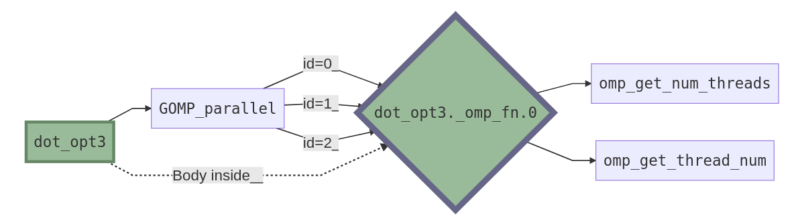
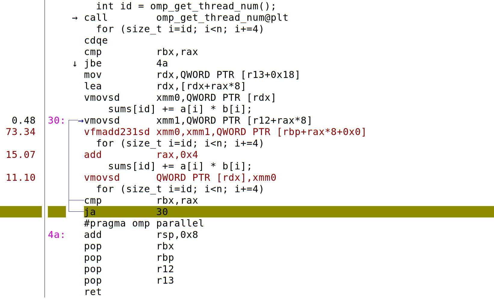
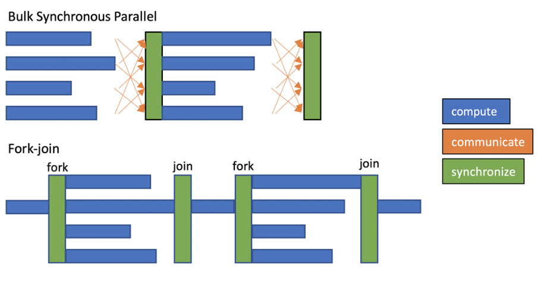
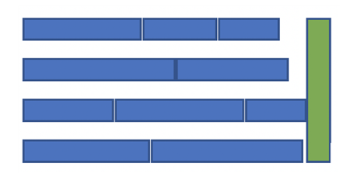

13) More on OpenMP and OpenMP Tasks#
Last time:
OpenMP Basics
#pragma omp parallel#pragma omp simd
Today:
1. More on OpenMP#
What does the compiler do when we add the #pragma openmp parallel directive?
static double dot_opt3(size_t n, const double *a, const double *b) {
double sum = 0;
omp_set_num_threads(4);
#pragma omp parallel
{
#pragma omp for reduction(+:sum)
for (size_t i=0; i<n; i++)
sum += a[i] * b[i];
}
return sum;
}
! gcc -Os -march=native -fopenmp ../c_codes/module3-3/dot.c -o dot
! objdump -d --prefix-addresses -M intel dot | grep dot_opt3
0000000000001379 <main+0x1b9> call 0000000000001849 <dot_opt3>
0000000000001849 <dot_opt3> push r12
000000000000184b <dot_opt3+0x2> mov r12,rdx
000000000000184e <dot_opt3+0x5> push rbp
000000000000184f <dot_opt3+0x6> mov rbp,rsi
0000000000001852 <dot_opt3+0x9> push rbx
0000000000001853 <dot_opt3+0xa> mov rbx,rdi
0000000000001856 <dot_opt3+0xd> mov edi,0x4
000000000000185b <dot_opt3+0x12> sub rsp,0x30
000000000000185f <dot_opt3+0x16> mov rax,QWORD PTR fs:0x28
0000000000001868 <dot_opt3+0x1f> mov QWORD PTR [rsp+0x28],rax
000000000000186d <dot_opt3+0x24> xor eax,eax
000000000000186f <dot_opt3+0x26> call 0000000000001140 <omp_set_num_threads@plt>
0000000000001874 <dot_opt3+0x2b> lea rsi,[rsp+0x8]
0000000000001879 <dot_opt3+0x30> xor ecx,ecx
000000000000187b <dot_opt3+0x32> xor edx,edx
000000000000187d <dot_opt3+0x34> lea rdi,[rip+0xc4] # 0000000000001948 <dot_opt3._omp_fn.0>
0000000000001884 <dot_opt3+0x3b> mov QWORD PTR [rsp+0x18],r12
0000000000001889 <dot_opt3+0x40> mov QWORD PTR [rsp+0x10],rbp
000000000000188e <dot_opt3+0x45> mov QWORD PTR [rsp+0x8],rbx
0000000000001893 <dot_opt3+0x4a> mov QWORD PTR [rsp+0x20],0x0
000000000000189c <dot_opt3+0x53> call 00000000000011b0 <GOMP_parallel@plt>
00000000000018a1 <dot_opt3+0x58> vmovsd xmm0,QWORD PTR [rsp+0x20]
00000000000018a7 <dot_opt3+0x5e> mov rax,QWORD PTR [rsp+0x28]
00000000000018ac <dot_opt3+0x63> sub rax,QWORD PTR fs:0x28
00000000000018b5 <dot_opt3+0x6c> je 00000000000018bc <dot_opt3+0x73>
00000000000018b7 <dot_opt3+0x6e> call 0000000000001150 <__stack_chk_fail@plt>
00000000000018bc <dot_opt3+0x73> add rsp,0x30
00000000000018c0 <dot_opt3+0x77> pop rbx
00000000000018c1 <dot_opt3+0x78> pop rbp
00000000000018c2 <dot_opt3+0x79> pop r12
00000000000018c4 <dot_opt3+0x7b> ret
0000000000001948 <dot_opt3._omp_fn.0> endbr64
000000000000194c <dot_opt3._omp_fn.0+0x4> push r14
000000000000194e <dot_opt3._omp_fn.0+0x6> mov r14,QWORD PTR [rdi+0x8]
0000000000001952 <dot_opt3._omp_fn.0+0xa> push r13
0000000000001954 <dot_opt3._omp_fn.0+0xc> mov r13,QWORD PTR [rdi+0x10]
0000000000001958 <dot_opt3._omp_fn.0+0x10> push r12
000000000000195a <dot_opt3._omp_fn.0+0x12> push rbp
000000000000195b <dot_opt3._omp_fn.0+0x13> mov rbp,rdi
000000000000195e <dot_opt3._omp_fn.0+0x16> push rbx
000000000000195f <dot_opt3._omp_fn.0+0x17> mov rbx,QWORD PTR [rdi]
0000000000001962 <dot_opt3._omp_fn.0+0x1a> test rbx,rbx
0000000000001965 <dot_opt3._omp_fn.0+0x1d> jne 0000000000001996 <dot_opt3._omp_fn.0+0x4e>
0000000000001967 <dot_opt3._omp_fn.0+0x1f> vxorpd xmm0,xmm0,xmm0
000000000000196b <dot_opt3._omp_fn.0+0x23> mov rdx,QWORD PTR [rbp+0x18]
000000000000196f <dot_opt3._omp_fn.0+0x27> lea rcx,[rbp+0x18]
0000000000001973 <dot_opt3._omp_fn.0+0x2b> vmovq xmm2,rdx
0000000000001978 <dot_opt3._omp_fn.0+0x30> mov rax,rdx
000000000000197b <dot_opt3._omp_fn.0+0x33> vaddsd xmm1,xmm0,xmm2
000000000000197f <dot_opt3._omp_fn.0+0x37> vmovq rsi,xmm1
0000000000001984 <dot_opt3._omp_fn.0+0x3c> lock cmpxchg QWORD PTR [rcx],rsi
0000000000001989 <dot_opt3._omp_fn.0+0x41> mov rsi,rdx
000000000000198c <dot_opt3._omp_fn.0+0x44> mov rdx,rax
000000000000198f <dot_opt3._omp_fn.0+0x47> cmp rsi,rax
0000000000001992 <dot_opt3._omp_fn.0+0x4a> je 00000000000019e7 <dot_opt3._omp_fn.0+0x9f>
0000000000001994 <dot_opt3._omp_fn.0+0x4c> jmp 0000000000001973 <dot_opt3._omp_fn.0+0x2b>
0000000000001996 <dot_opt3._omp_fn.0+0x4e> call 0000000000001170 <omp_get_num_threads@plt>
000000000000199b <dot_opt3._omp_fn.0+0x53> mov r12d,eax
000000000000199e <dot_opt3._omp_fn.0+0x56> call 0000000000001130 <omp_get_thread_num@plt>
00000000000019a3 <dot_opt3._omp_fn.0+0x5b> movsxd rsi,r12d
00000000000019a6 <dot_opt3._omp_fn.0+0x5e> xor edx,edx
00000000000019a8 <dot_opt3._omp_fn.0+0x60> movsxd rcx,eax
00000000000019ab <dot_opt3._omp_fn.0+0x63> mov rax,rbx
00000000000019ae <dot_opt3._omp_fn.0+0x66> div rsi
00000000000019b1 <dot_opt3._omp_fn.0+0x69> cmp rcx,rdx
00000000000019b4 <dot_opt3._omp_fn.0+0x6c> jb 00000000000019e0 <dot_opt3._omp_fn.0+0x98>
00000000000019b6 <dot_opt3._omp_fn.0+0x6e> imul rcx,rax
00000000000019ba <dot_opt3._omp_fn.0+0x72> vxorpd xmm0,xmm0,xmm0
00000000000019be <dot_opt3._omp_fn.0+0x76> add rdx,rcx
00000000000019c1 <dot_opt3._omp_fn.0+0x79> add rax,rdx
00000000000019c4 <dot_opt3._omp_fn.0+0x7c> cmp rdx,rax
00000000000019c7 <dot_opt3._omp_fn.0+0x7f> jae 000000000000196b <dot_opt3._omp_fn.0+0x23>
00000000000019c9 <dot_opt3._omp_fn.0+0x81> vmovsd xmm3,QWORD PTR [r14+rdx*8]
00000000000019cf <dot_opt3._omp_fn.0+0x87> vfmadd231sd xmm0,xmm3,QWORD PTR [r13+rdx*8+0x0]
00000000000019d6 <dot_opt3._omp_fn.0+0x8e> inc rdx
00000000000019d9 <dot_opt3._omp_fn.0+0x91> cmp rax,rdx
00000000000019dc <dot_opt3._omp_fn.0+0x94> jne 00000000000019c9 <dot_opt3._omp_fn.0+0x81>
00000000000019de <dot_opt3._omp_fn.0+0x96> jmp 000000000000196b <dot_opt3._omp_fn.0+0x23>
00000000000019e0 <dot_opt3._omp_fn.0+0x98> inc rax
00000000000019e3 <dot_opt3._omp_fn.0+0x9b> xor edx,edx
00000000000019e5 <dot_opt3._omp_fn.0+0x9d> jmp 00000000000019b6 <dot_opt3._omp_fn.0+0x6e>
00000000000019e7 <dot_opt3._omp_fn.0+0x9f> pop rbx
00000000000019e8 <dot_opt3._omp_fn.0+0xa0> pop rbp
00000000000019e9 <dot_opt3._omp_fn.0+0xa1> pop r12
00000000000019eb <dot_opt3._omp_fn.0+0xa3> pop r13
00000000000019ed <dot_opt3._omp_fn.0+0xa5> pop r14
00000000000019ef <dot_opt3._omp_fn.0+0xa7> ret
Anatomy of a parallel region#

Where GOMP stands for GNU Offloading and Multi-Processing Project (GOMP) and is an implementation of OpenMP and OpenACC for GNU compilers.
2. Memory semantics#
For each variable accessed within the parallel region, we can specify the following data-sharing policies:
private:
privateis the clause that contains the variables that each thread in the OpenMP parallel region will have a copy of. These copies are not initialised upon entering the parallel region.firstprivate: Like private, but by contrast,
firstprivatevariables are initialised with the value of the original variable upon entering the parallel region.lastprivate:
lastprivateis a clause that can be used in a parallelised loop or sections. Thelastprivateclause shares some of the semantics of the private clause. That is, each thread will have an uninitialised copy of the variables passed aslastprivate. However, unlike a private variable, at the end of the parallelised loop or sections, alastprivatevariable will take the value of the copy hosted at the thread that executed the last iteration (in the case of a parallelised loop) or section. The “last” iteration or section is the one that would be executed last if they were executed sequentially.shared:
sharedis the clause that contains the variables shared across the threads belonging to the OpenMP parallel region concerned. Such variables are therefore accessed concurrently, arising potential data-races.
int a=0, b=1, c=2;
#pragma omp parallel private(a) firstprivate(b) shared(c)
{
int id = omp_get_thread_num();
a++;
b++;
c++;
printf("[%d] %d %d %d\n", id, a, b, c);
}
printf("END: %d %d %d\n", a, b, c);
! gcc -fopenmp -Wall ../c_codes/module3-3/omp-mem.c -o omp-mem
Programming styles#
The private semantics is actually unnecessary and error-prone. We can just declare those variables at inner-most scope.
int b=1, c=2;
#pragma omp parallel firstprivate(b) shared(c)
{
int a = 0;
int id = omp_get_thread_num();
a++;
b++;
c++;
printf("[%d] %d %d %d\n", id, a, b, c);
}
printf("END: %d %d %d\n", a, b, c); // Error: a not in scope here
3. A quick demo on perf#
Linux perf is a kernel interrupt-based profiling tool. It uses performance counters and interrupts to diagnose all sorts of bottlenecks.
! perf stat ../c_codes/module3-3/dot -n 10000 > /dev/null
Performance counter stats for '../c_codes/module3-3/dot -n 10000':
40.86 msec task-clock # 2.909 CPUs utilized
0 context-switches # 0.000 /sec
0 cpu-migrations # 0.000 /sec
122 page-faults # 2.986 K/sec
36,629,815 cycles # 0.896 GHz
11,647,086 instructions # 0.32 insn per cycle
1,040,692 branches # 25.470 M/sec
15,906 branch-misses # 1.53% of all branches
0.014048436 seconds time elapsed
0.037252000 seconds user
0.003921000 seconds sys
! perf record -g ../c_codes/module3-3/dot -n 10000 -r 1000 > /dev/null
WARNING: Kernel address maps (/proc/{kallsyms,modules}) are restricted,
check /proc/sys/kernel/kptr_restrict and /proc/sys/kernel/perf_event_paranoid.
Samples in kernel functions may not be resolved if a suitable vmlinux
file is not found in the buildid cache or in the vmlinux path.
Samples in kernel modules won't be resolved at all.
If some relocation was applied (e.g. kexec) symbols may be misresolved
even with a suitable vmlinux or kallsyms file.
Couldn't record kernel reference relocation symbol
Symbol resolution may be skewed if relocation was used (e.g. kexec).
Check /proc/kallsyms permission or run as root.
[ perf record: Woken up 1 times to write data ]
[ perf record: Captured and wrote 0.393 MB perf.data (4283 samples) ]
! perf report -M intel
7?47h ┌Processing events... [5K/402K]────────────────────────────────────────────────┐│ │└──────────────────────────────────────────────────────────────────────────────┘ 10K/402K] 5 20 5 31 6 41 6 51 6 617 72 7 82 7 92 8 103K/402K] 8 13 823 9 34 9 44 9 54 9 6570 5 80 5 90 6 201 6 11 621 632 7 427 52 7 63 8 73 8 83 8 94 9 304 9 149 24 30 5 40 5 50 5 61 671 6 81 6 92 7 402
time ordered events...
┌─Warning:─────────────────────────────────────────────────────────┐│Kernel address maps (/proc/{kallsyms,modules}) were restricted. ││││Check /proc/sys/kernel/kptr_restrict before running 'perf record'.││││As no suitable kallsyms nor vmlinux was found, kernel samples││can't be resolved.││││Samples in kernel modules can't be resolved as well.││││││││Press any key...│└──────────────────────────────────────────────────────────────────┘
?47l8
Note how GOMP overhead dominates the cost in this experiment. We need more work (longer arrays, etc.) to justify the overhead of distributing and collecting the parallel work.
We can drill down into particular functions (especially those that we’ve written, which we have hopefully compiled with -g to include debugging information).

From this, we see specific instructions, and their corresponding lines of code, that are most frequently being processed when the kernel interrupts to check. In this experiment, we see *sd “scalar double” instructions, indicating lack of vectorization.
In contrast, the following annotation shows use of *pd “packed double” instructions, indicating that the “hot” loop has been vectorized.
The reason for vectorization can sometimes be determined by -fopt-info -fopt-info-missed, and can be encouraged by techniques like manually splitting accumulators, preventing aliasing by using restrict, directives like #pragma omp simd, and global compiler flags like -ffast-math (although, very dangerous to use).
Tip
For more on perf, see Brendan Gregg’s Linux Performance site.
4. OpenMP Tasks#
Tip
See this resource for OpenMP Task Parallelism.
Using #pragma omp task#
Up to now, we’ve been expressing parallelism for iterating over an array.
The application programmer specifies regions of code to be executed in a task with the
#pragma omp taskconstructAll tasks can be executed independently
When any thread encounters a task construct, a task is generated
Tasks are executed asynchronously by any thread of the parallel region
Completion of the tasks can be guaranteed using the
taskwaitsynchronization construct
1#include <stdio.h>
2int main() {
3 int x = 1;
4 #pragma omp parallel
5 #pragma omp single
6 {
7 #pragma omp task shared(x) depend(out: x)
8 x = 2;
9 #pragma omp task shared(x) depend(in: x)
10 printf("x + 1 = %d. ", x+1);
11 #pragma omp task shared(x) depend(in: x)
12 printf("x + 2 = %d. ", x+2);
13 }
14 puts("");
15 return 0;
16}
! gcc -fopenmp ../c_codes/module3-3/task_dep.4.c -o task_dep.4
! for i in {1..10}; do ../c_codes/module3-3/task_dep.4; done
The
singleconstruct specifies that the associated structured block is executed by only one of the threads in the team (not necessarily the master thread), in the context of its implicit task. The other threads in the team, which do not execute the block, wait at an implicit barrier at the end of thesingleconstruct unless anowaitclause is specified.The
dependclause allows you to provide information on the way a task will access dataIt is followed by an access mode that can be
in,outorinout. Examples:depend(in: x, y, z): the task will read variablesx,yandzdepend(out: res): the task will write variableres; Any previous value ofreswill be ignored and overwrittendepend(inout: k, buffer[0:n]): the task will both read and write the variableskandbuffer; the content ofnelements ofbufferstarting from index 0 will be used in the read-and-write
The OpenMP runtime system dynamically decides whether a task is ready for execution or not considering its dependencies (there is no need for further user intervention here).
1#include <stdio.h>
2int main() {
3 int x = 1;
4 #pragma omp parallel
5 #pragma omp single
6 {
7 #pragma omp task shared(x) depend(out: x)
8 x = 2;
9 #pragma omp task shared(x) depend(inout: x)
10 printf("x + 1 = %d. ", x+1);
11 #pragma omp task shared(x) depend(in: x)
12 printf("x + 2 = %d. ", x+2);
13 }
14 puts("");
15 return 0;
16}
! gcc -fopenmp ../c_codes/module3-3/task_dep.4inout.c -o task_dep.4inout
! for i in {1..10}; do ../c_codes/module3-3/task_dep.4inout; done
In general, creating tasks (even with only one thread) creates an expensive overhead.
The OpenMP loop scheduler#
When we put together the
#pragma omp parallel(which spawns a group of threads) and#pragma omp for(which divides loop iterations between the spawned threads) constructs, as in#pragma omp parallel forwe do both things at once.To this, you can optionally add
schedule(static,n), wherenis the chunk size that you want the tasks to be divided into for the threads. (Note: addingschedule(static,1)as in#pragma omp parallel for schedule(static,1)is equivalent to just#pragma omp parallel for)schedule(dynamic,n)still tells OpenMP to split task into iter_size/chunk_size chunks, but distribute trunks to threads dynamically without any specific order.Check other options in this resource.
To fork/join or to task?#
One of the main issues in High-Performance Computing (HPC) systems is the underutilization of resources. Parallel applications partition and distribute compute and data across processors in the system that work together to solve a given problem. In this operation, processors synchronize and communicate which may lead to some of them spending time idle, waiting for other processors to complete their part. Idle processors mean wasted time and power. This can happen for serial sections of the code, load imbalance, or if you are waiting for synchronization.
These issues are common in bulk synchronous parallel applications, especially those that statically assign work to processors.
Many codes rely on bulk synchronous parallelization constructs to distribute and synchronize work across multiple threads in a system. In this model, multiple threads operate in parallel on different parts of a problem, and perform a global synchronization when the parallel work is completed.
Fork-join is a similar model where a single thread, sometimes called a master thread, is the application entry point. This forks into multiple threads that concurrently work on different parts of a problem, and then synchronize to join into a single thread when the work in the parallel section is complete (similar to the worksharing-parallel constructs in OpenMP that distribute the iterations in a loop across multiple threads).

Load imbalance appears when different threads receive an uneven amount of work to do, or perform the work at different speeds, leading to different amounts of compute time. In this scenario, the faster threads need to wait for lagging threads on global synchronizations, therefore being in an idle state and wasting resources during that time. In the fork-join model, serial sections in between parallel regions become an increasing bottleneck, as parallel regions are shortened with increasing numbers of threads.
A task is a piece of compute that operates on a piece of data and that may be executed concurrently with other tasks. This parallel programming abstraction is intuitive and allows to specify data-flow dependencies between tasks instead of costly global synchronizations. This mitigates idle time created as a result of load imbalance, given that threads pick up work as they complete, and there is also less time spent on serial sections due to the reduced number of global synchronizations.

For tasking to be efficient, it relies on overdecomposition, i.e., creating more work units than there are processing units. For many numerical algorithms, there is some overhead to overdecomposition. For example, in array processing of an array size $n, a halo/fringe/ghost/overlap region might need to be computed as part of each work patch, leading to time models along the lines of
where $R is the processing rate.
Tip
Recommended reading: Tasking Lives Up to its Promises